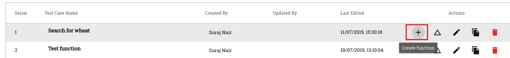
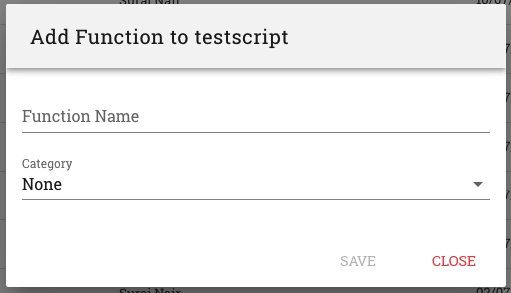

2. Functions¶
One of the most powerful features that the RobusTest platform provides is the use of ‘Functions’ in automating test cases.
A function, in RobusTest, is a block of test steps that perform a particular task. E.g., a group of test steps that capture customer information.
Why use functions
Functions help:-
- in reducing the time & effort spent in automating test cases through re-usability of code
- in easy maintenance and updating of test cases in case of any changes in the application flow
- with improved readability of test cases
Use functions:-
- wherever a series of steps form a logical unit, e.g. a series of test steps for selecting a rental plan, entering billing information, etc.
- whenever a group of actions are repeated across more than one scenario
Using functions will significantly reduce the amount of future time spent in incorporating changes to app flows, data, element resource ids, etc.
E.g. Say, there are a series of standalone test steps (i.e., test steps not within a function) where a 4G Plan is being selected and that these steps are repeated in a number of test cases. In future, if the specific plan being selected changes, you would have to go to each and every test case and update them.
Instead, have these steps within a function named ‘Select Rental Plan’. Now, any change in the way a rental plan is created would only require a one time change within this function script. This change is reflected in all test cases that call this function.
Let’s have a look at how we create and use functions in RobusTest
1. Creating a Function
RobusTest enables you to create functions out of existing test cases.
a. Open an automation test session
b. Record the test steps that you would like to be converted into a function
c. Save the test case
d. Go to the ‘Test Cases’ page
e. For the test case that you created, click on the ‘Create Function’ button

- f. On the pop-up window that opens:
- provide an appropriate name for the function
- choose the type of function to be created from the ‘Category’ drop down
g. Click on the ‘Save’ button
You have now created a new function
2. Using a Function
Now that you have created a function, let’s see how we can use them
1. In an Automation test session, create a new test case or open an existing test case in which you would like to use the function.
2. Click on the ‘Import Function’ button.
3. On the ‘Import Function’ window that opens, click on the function you would like to use in the test case.
4. Click on the ‘Save’ button.
5. Save/Update your test case.
The function you created earlier is now a part of the test case.
It is seen as a separate test step in the test case.
On expanding this test step, you can see a tab named ‘Function Steps’
On clicking on the above tab, you can view the following information:
- name of the test case that was converted into a function
- name of the function
- list of test steps that constitute the function
If any test step being executed within a function fails, then, the test case that calls the function also fails
Click here to know More about functions